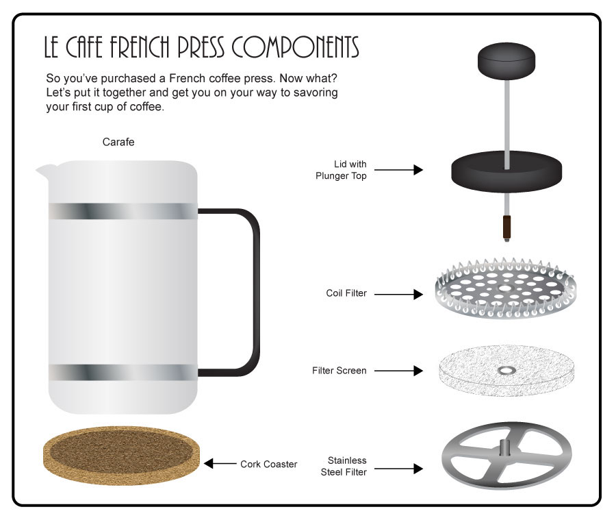

Step 2: Prepare the grounds.
Skills:
- Grind your beans, if you need to! If you haven't bought pre-ground coffee beans, you will need to grind your beans using a bean grinder.
- Measure your grounds. Use about one tablespoon of grounds per cup of coffee you'd like to make. If you want stronger coffee, use more grounds. Likewise, for less strong coffee, use fewer grounds.
- Add your grounds to the French press. Take everything out of the carafe (i.e., the plunger, lid, and filter system) and put your coffee grounds into the carafe. If you're not familiar with what the parts of a French press are called, check out the image below!

Click here to return to Step 1: Boiling the water.
Click here to proceed to Step 3: Steeping and pressing the coffee.